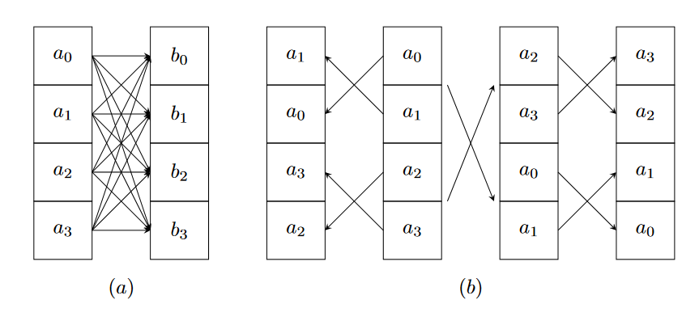
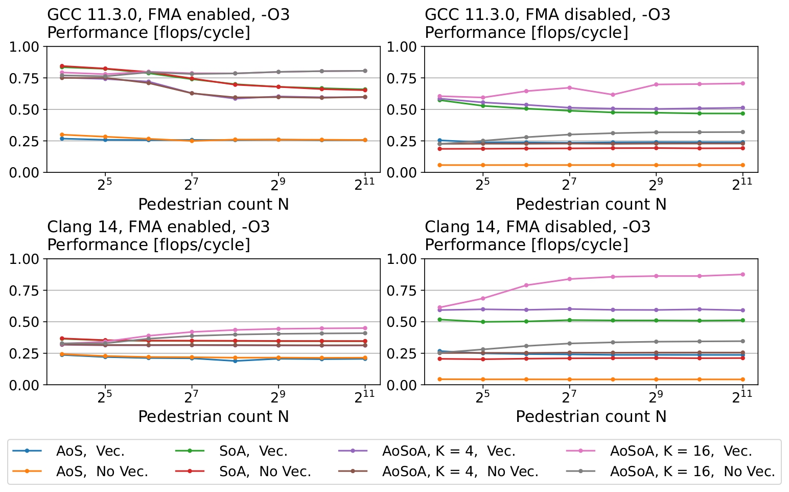
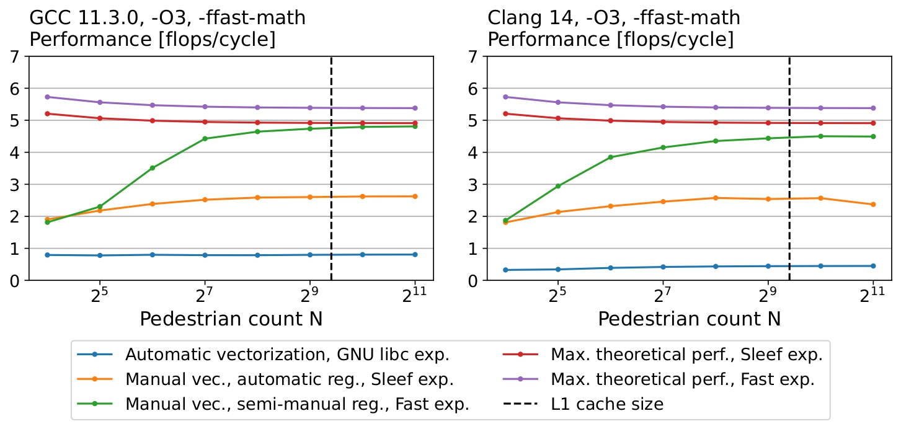
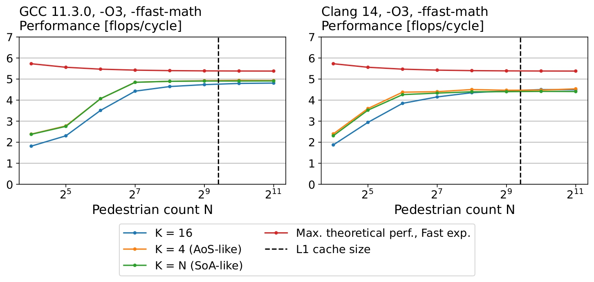
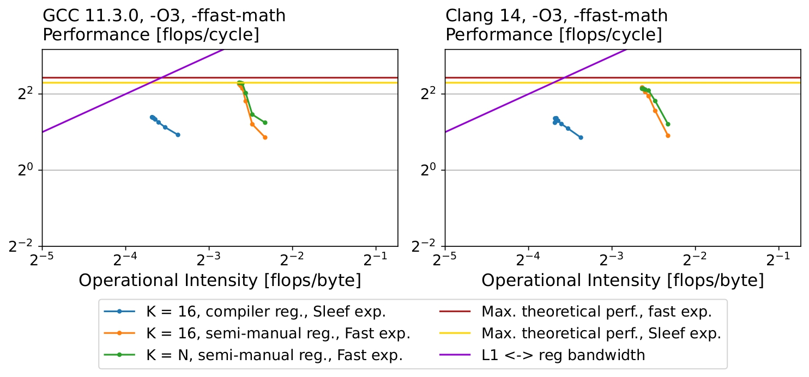
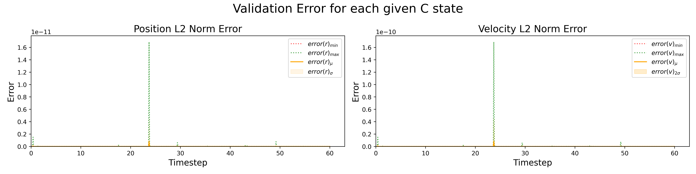
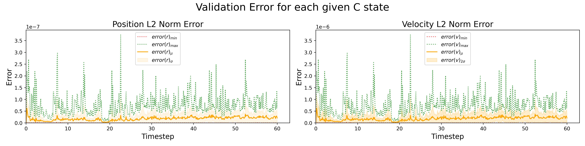
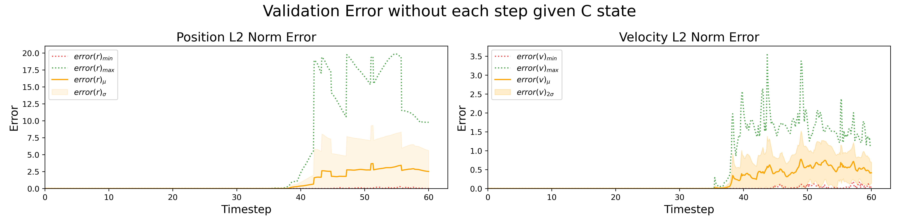
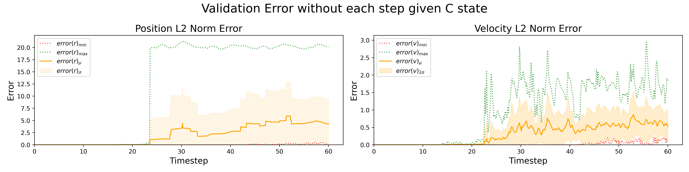

Optimizing the Social Force Model: Investigating Memory Layouts and Register Pressure
Optimizing the Social Force Model: Investigating Memory Layouts and Register Pressure
Helbing and Molńar’s Social Force Model provides a quite realistic description of pedestrian dynamics. However, its simulation poses high computational and memory requirements. In this paper, we investigate these requirements to deliver a social force model optimzed for Intel’s Skylake microarchitecture. This paper describes our pipeline, including: deriving an accurate performance estimation, implementation of three memory layouts, vectorization using Intel Intrinsics, accuracy validation and semi-manual register allocation. Results show that we can achieve of our performance estimation with a relative error of order per simulation step compared to a reference implementation.
Introduction
Motivation
In urban design and planning, establishing an efficient transportation network is crucial. Architects employ predictive models to optimize designs, identifying congestion points and minimizing travel time based on participant behavior. While precise predictions are feasible for centrally controlled networks such as trains, making assertions about pedestrian flow in public spaces is challenging due to their unpredictable nature, particularly in crowded situations.
One way to model pedestrian dynamics entails employing an equation of motion that encapsulates the human behavioral responses to their surroundings as social forces. Despite the algorithm simulation’s success in replicating observed behavioral patterns within densely populated environments, it exhibits detrimental implications on performance. Due to the algorithm’s inherent structure, it suffers from a non-negligible quadratic algorithmic complexity that grows with the number of pedestrians in the simulation. Moreover, simulating the algorithm can be memory-intensive in the case of a large number of pedestrians if a sub-optimal data structure and memory layout were considered.
These challenges make the optimization of the social force model an imperative problem to solve. To enable its application as a predictive pedestrian dynamics model across real-world scenarios, we develop a performance-optimized implementation that exhibits efficient execution on contemporary hardware platforms.
Contribution
In this paper, we present a high-performance social force model implementation for Intel’s Skylake microachitecture.
To that end, we investigate different memory layouts and show that the structure of arrays and the array of structures of arrays layouts achieve better performance than the array of structs layout. We also show that compiler vectorization of these implementations for Intel’s Advanced Vector Extensions (AVX2) does not succeed and that a speedup by about can be achieved by manual vectorization. Because this still leaves a large gap to our performance bound, we derive a tighter estimation of our achievable performance using new techniques. We improve our implementation based on these insights and by replacing our implementation of the exponentiation function, that turns out to consume a large fraction of the runtime, by a faster but less accurate approximation, to achieve a peak performance of 4.81 flops/cycle.
Related work
The social force model has gained significant attention in response to population growth, primary aimed to understand pedestrian behavior. PedSim is a library written in C that provides various functions. Moreover, SocialForceModel is a C++ simulation that represents an enhanced version of Helbing and Molnár’s algorithm where model parameters are derived from real-world experiments. Despite the utilization of Vector data structures, neither implementations have undergone further optimization. There exists an OpenCL (GPU) implementation of PedSim that is capable of simulating 20 thousand pedestrians with 8 model steps per second as noted by Lauterbach (2017). Moreover, Payet (2016) has developed a Java-based simulation of the social force model that employs parallelization through multi-threading to distribute the quadratic workload across many threads. While these implementation resort to multi-threading and GPU utilization to increase performance, we focus on optimizing the algorithm for a one microarchitecture to better understand how the algorithm’s inherit computational and memory requirements impact performance.
The Social Force Model
The social force model by Helbing and Molnár considers a number of pedestrians moving on a 2D plane, surrounded by obstacles.
In a condensed form, it defines three forces that determine a pedestrian ’s movement:
-
Destination attraction. A pedestrian always has a target position it is heading for. They accelerate or decelerate their movement into that direction, approaching a desired speed within seconds. Thus, if ’s current position is and their current velocity is , one can compute this attractive force as
denoting the Euclidean norm.
-
Pedestrian repulsion. The model assumes that pedestrians don’t tend to be too close to other pedestrians to avoid a potential collision. To avoid colliding with another pedestrian , pedestrian takes into account ’s direction of movement and step width
and computes its repulsive potential from as
where is the relative position between pedestrian and pedestrian (for a more detailed description and explanation, please refer to Helbing and Molnár). Note that the case distinction above ensures that if pedestrian is outside of pedestrian ’s angle of sight , ’s repulsion from is reduced by factor , because is assumed to have limited perception on in this case.
-
Obstacle repulsion. The pedestrians also don’t want to collide with walls or other obstacles. Therefore, the model defines an obstacle repulsion force, that will push them away from the obstacles as they get closer, namely
where and are the maximum force and decay factor which are constants in this formula and denotes the euclidean distance between the pedestrian and the closest point of obstacle .
These forces are computed for each pedestrian and summed up, yielding the acceleration of the respective pedestrian at that specific time. Taking into account a maximal velocity of the pedestrian that they won’t exceed, one obtains the following differential equations for velocity and position:
Investigating Memory Layouts
The AoS, SoA and AoSoA memory layouts are the three most basic layouts for a set of compound data and represent three different ways of interleaving data fields. Assuming each data element (e.g. each pedestrian) can be represented as a structure composed of primitive types (e.g. double), the AoS layout stores the data as an Array of Structs, i.e. it stores a complete data record contiguously in the memory preceding the next data record. The SoA layout inverts this interleaving pattern, storing a Structure of Arrays instead: It stores contiguous arrays for each field of the data record. The benefit of the latter approach is that it allows contiguous memory loads of data with identical semantic meaning, allowing for easier application of SIMD operations: Whereas an aligned load of four doubles in the AoS layout would have yielded a mix of structure fields, an aligned load of four doubles in the SoA layout yields a vector of four values of the same field, but of different pedestrians.
The AoSoA (Array of Structures of Arrays, or “tiled SoA”) layout combines and generalizes the AoS and SoA approaches: It combines a typically fixed number (the block size, ) of data records into blocks stored in an SoA fashion and then stores the blocks themselves in a simple array (in an AoS fashion). This has two main advantages:
- it reduces to the AoS layout when and to the SoA implementation when , where is the number of data records. This allows for a generalized implementation, enabling the developer to choose the final layout based on performance benchmarks for varying ; and
- for being a multiple of the SIMD vector size, it allows for the same aligned, equal-meaning vector reads as the SoA layout while maintaining some degree of locality of data belonging to the same pedestrian (or group of pedestrians), which may yield better cache locality and better performance depending on the dataset.
We considered the AoS layout as the straightforward way of implementing the simulation loop of section Background and we will thus refer to this implementation as our baseline. Performance measurements showed that we achieve about 0.3 flops/cycle with this approach, which leaves some gap to the flops/cycle from our performance bound of section Background. Implementing the SoA and AoSoA layouts together with the precomputations mentioned in section Background allowed us to push the performance to around 0.9 flop/cycle, and thus achieve about 54% of our derived maximum performance. We will further discuss these results in section Results.
Manual Vectorization
Next, we considered the question of how our implementation could be vectorized to further push its performance. Because the simulation loop involves computing the same function for every pedestrian, it should be completely vectorizable. However, since compiler vectorization did not provide a lot of improvement, as we will discuss in more detail in section Results, we need to vectorize it ourselves.
To that end, we implemented a hand-vectorized version of the AoSoA implementation using Intel Intrinsics, specifically AVX2. While this implementation is straightforward for most parts of the social force algorithm, some implementation details are nontrivial and highlighted in the following sections.
AoSoA base unit and Alignment
To simplify the intrinsics-based implementation, __m256d was chosen as the base unit of the AoSoA fields, instead of double, and all structs as well as memory allocations were aligned to 32-byte boundaries to ensure that all struct fields could always be loaded into registers using aligned loads.
Minimizing Shuffles
To determine the pedestrian repulsion for each pedestrian $\alpha $, we have to perform some computation with every other pedestrian in the simulation. As visualized in figure shuffle, this means that vector elements need to interact with elements at all positions and we need to shuffle either vector or to achieve this.
Because lane-crossing shuffles are expensive, we try to minimize them as shown in figure shuffle, where it is shown how we can produce four permuted vectors, using only one lane crossing, that enable all interactions we need.
To minimize the number of shuffles in the nested pedestrian repulsion loop, we apply these permutations to the pedestrian vectors we iterate over in the outer loop and perform four pedestrian repulsions in the inner loop, one with each shuffled version of the outer loop vectors, using the same inner loop pedestrian vectors in all four computations. Lastly, we accumulate the computed forces in four permuted vectors that are shuffled back and summed up once the inner loop has finished.

SIMD Exponential Implementation
A major obstacle during vectorization is the exponential function.
AVX2 does not directly support computing a SIMD exponential operation, thus requiring the use of either an implementation written by us or the use of a library. Intel’s Short Vector Math Library (SVML) provides an exponential implementation, however, SVML is only available when using the Intel C++ Compiler or MSVC. To ensure portability of our implementation we opted to use the Sleef vector math library, which performs identically to the SVML exponential implementation for 256-bit packed double vectors, according to Sleef’s published benchmarks Sleef Benchmark Results.
We can now adapt our instruction mix bound from section Background to the vectorized setting by replacing the GNU exponential function we considered before with the Sleef one, which is much easier to analyze as it does not contain branches. Comparing the performance of our hand-vectorized implementation with that of the compiler vectorized one, we managed to achieve a speedup by a factor of about 3.3. However, we are still very far from our performance bound, achieving about 2.65 flops/cycle, with the vectorized performance bound being at around 6 flops/cycle (see section Results for more details).
Improved Performance Estimation
For the rest of this paper, we address the question of where the discrepancy between our achieved performance and the maximum performance bound of section Vectorization comes from and how we might be able to close this gap.
For this section, let us first consider the performance bound.
As described in section Background, our performance bound is solely based on the instruction mix. The reason for that are the following two assumptions:
- We are compute-bound, since we have operations to be performed on data, n being the number of pedestrians, m the number of obstacles.
- For our bottleneck, pedestrian repulsion, we have n independent loops whose iterations are commutative and associative, because they just accumulate (i.e. sum up) the repulsion from every other pedestrian. Thus, there should be always enough instructions ready to be executed to fill the pipeline.
However, because of the shuffling, the variables that remain constant in the inner loop consist of ( + constants) vectors, so there is no way we can keep all of them in registers. Indeed, an inspection of the generated assembly shows that about of the instructions for pedestrian repulsion have a memory operand, a majority of these being part of the values that don’t change in the inner loop and thus, in principle, wouldn’t need to be loaded in every inner loop iteration. Therefore, to improve our performance bound, the first question becomes: Which values need to be loaded in each inner loop iteration to minimize loads into registers?
To that end, we can take a look at the pedestrian repulsion dependency graph (see figure Pedestrian Repulsion Graph in appendix Interleaving). Recall that we actually compute four pedestrian repulsions per inner loop iteration because of the shuffling.
One pedestrian repulsion requires at least registers. This leaves us with registers in which we can keep constants that we need in every inner loop iteration, to minimize loads. In return, we must consider all other vectors of the working set to be loaded for each pedestrian repulsion computation (meaning four times in the innermost loop).
Scheduling μops
Now that we have decided which values need to be loaded, let’s take a closer look at the second assumption, namely that the n independent inner loops will always give us enough instructions that are ready to be executed to fully occupy ports and .
First of all, it is not correct to assume that the processor can only execute one pedestrian repulsion at a time only because they, as we just concluded, do not interleave and use the same registers. Skylake CPUs are capable of performing out-of-order execution and register renaming. Therefore, even if two instructions write to the same architectural register, they can be executed in any order, the results being temporarily stored in some of the 168 physical registers Skylake Insights before the most recent of them is (or both are) written back to the architectural register.
However, the amount of instruction reordering a Skylake processor is capable of is limited by size of the Reorder Buffer (ROB), which has a capacity of μops Skylake Insights. The ROB is a FIFO (first in, first out) queue that contains the sequence of instructions the processor is currently executing. Once the first μop in the FIFO (the head) has finished, it is removed and the next μop in program memory is attached to the end of the queue. Any μop in the ROB can be executed once all of its operands have been computed (i.e. have been written to the physical register file).
On the other hand, this means that if the distance between two instructions in program memory is more than 224 μops, they cannot be reordered. Hence, because we assume the pedestrian repulsion computations not to interleave (in program memory) and each pedestrian repulsion contains 108 μops, it follows that no more than 4 pedestrian repulsions can be executed at the same time.
To learn how this observation influences the achievable performance of our program, we tried to derive an optimal schedule for the inner pedestrian repulsion loop that includes the loads we have determined before and respects the ROB size. However, deriving this schedule by hand turned out to be somewhat infeasible and error prone.
Therefore, we created an automatic scheduler that follows a few simple, reasonable rules when deciding on which μop to schedule next (described in more detail in appendix Scheduler). Instead of letting the automatic scheduler derive the complete schedule for all n-1 pedestrian repulsions of the inner loop, we used the observation that, because the scheduler is deterministic and stateless, the generated schedule will repeat, once enough pedestrian repulsions are scheduled. Thus, we equipped the scheduler with a mechanism to detect this repetition. From this periodic schedule we were then able to calculate in which cycle the number of finished μops is equal to the number of μops of the complete inner loop. We used this number as a runtime estimate to replace the pedestrian repulsion part in our previous instruction mix bound, yielding a performance estimate of
which is a reduction by ca. compared to our previous performance bound.
Note that we need to give the scheduler a topological sorting of the pedestrian repulsion dependency tree (for simplicity, we assume every pedestrian repulsion has the same topological sorting in the generated assembly) to know when the ROB contains which μops. Our implementation of the scheduler works with any topological sorting, thus we could in principle run it on every sorting and use the shortest runtime as our estimation, which would even give us a performance bound under the assumption that our scheduler is not worse than that of an Intel Skylake CPU. However, because the dependency graph contains loads that can have any order in the topological sorting, there exist more than topological sortings of that graph. Because it is currently (2023) computationally infeasible to try them all, we restricted ourselves to trying out a few reasonable sortings to obtain the above performance estimate.
Register and Exponential Optimization
As mentioned in the previous section, the compiler on its own does not succeed in minimizing the loads and stores we know are required, which might add significant latency to our implementation, compared to our new performance estimate. To address this problem, we renamed our variables to match the 16 architectural floating point registers YMM0 to YMM15 of our processor and tried to make loads and stores explicit by assigning the values we keep in other variables (i.e. those that might need to be loaded from memory) to and from these register variables.
Even though the compiler does not translate this approach in an entirely correct manner, it helped to significantly reduce the number of instructions with implicit loads and stores.
Fast Exponential Computation
As a final optimization effort, we identified the exponential computation as a potential bottleneck, as microbenchmarking showed that our implementation spends about of its runtime within that function. Therefore, we replaced the Sleef exponential implementation with an approximation based on IEEE-754 floating point bit manipulation as described in fastexp_theory and implemented in fastexp_impl. This approximation requires fewer flops than the Sleef implementation and significantly reduces the number of constants used in the calculation. The effects of these improvements we will now discuss in the following section, together with the results from the previous sections.
Results

Figure 1: AoS, SoA, and AoSoA (with block sizes and ) implementations, compiled with GCC and Clang, FMAs enabled and disabled, with automatic vectorization enabled and disabled. All implementations use an inlined GNU libc exp(). With FMAs disabled, automatic vectorization provides a speedup, however this speedup vanishes when FMAs are enabled. Enabling FMAs produces a similar speedup to enabling vectorization.

Figure 2: Performance of the automatically and manually vectorized AoSoA implementation, with K = 16, fully automatic register assignment and semi-manual register assignment. Performance decreases for datasets exceeding the L1 cache size on Clang with automatic register assignment, indicating that Clang fails to perform loads and stores optimally, causing increased latencies.
Experimental Setup
All benchmarks were performed on an Intel Core i7-7500U (Kaby Lake), clocked at (no Turbo Boost), using a single core. Kaby Lake is microarchitecturally almost identical to Skylake.
Our implementations were compiled using GCC 11.3.0 and Clang 14. The -O3 flag was always passed to the compiler, FMAs (-ffast-math) are enabled where noted, automatic compiler vectorization was disabled (via -fno-tree-vectorize on GCC and -fno-slp-vectorize on Clang), where noted.
Compiler Vectorization and FMAs
To investigate the capabilities of automatic compiler vectorization and the effects of enabling FMAs, we implemented the social force model with the AoS, SoA and AoSoA memory layouts and compared the performance when compiler vectorization and FMAs are turned on and off. Fig. 1 shows that automatic vectorization slightly improves performance. However it does not yield a performance close to the expected performance bound for vectorized code based on the instruction mix:


Accuracy Evolution
In the process of simulating a complex system with many variables and interactions, slight differences in input values can lead to significantly different outputs over time. This is particularly true in our case, where the force calculation of pedestrian repulsion is not contiguous and can deviate by a factor of depending on whether a pedestrian is outside or inside another pedestrian’s angle of sight[1].
To evaluate the impact of our optimizations on the accuracy of our simulation, we devised a validation system using Python. This system enables us to compare the differences in pedestrians’ positions and velocities between the C implementation and a straightforward Python implementation, both within a single simulation step and over the entire simulation span.
The detailed analysis of this error evolution is further discussed in appendix . However, a notable observation is that the shift from the Sleef implementation to the fast exponentiation function, led to a four orders of magnitude increase in the absolute error incurred by a single simulation step, as illustrated in Figures AoSoA SIMD Sleef single step error and AoSoA SIMD fast exp single step error. Despite this increase, the error magnitude of might still be deemed acceptable in some scenarios. Yet, as FiguresAoSoA SIMD Sleef accumlated error and AoSoA SIMD fast exp accumlated error demonstrate, the timeframe during which the accumulated error remains minimal shrinks from about 40 seconds to approximately 23 seconds. This implies that in certain applications, the trade-off between enhanced performance and the duration after which our simulation may diverge significantly from reality, may render the simulation less useful.




Conclusions
Our innovative implementation utilizing AoSoA and SoA memory layouts coupled with fast exponentiation and register-like variable renaming has significantly bolstered performance, achieving an 18.5x speed-up compared to the AoS baseline implementation. The meticulous manual vectorization and strategic restriction of variable usage within the pedestrian repulsion loop emerged as the chief contributors to this substantial performance elevation. Moreover, our refined performance estimation approach has markedly narrowed the performance gap.
Looking ahead, exploring optimization avenues for multi-core and multi-threaded environments could yield further performance enhancements. Moreover, gaining deeper insights into the workings of the CPU internal scheduler, possibly through precise measurements, alongside devising strategies to minimize the number of topological sortings required for examination, could pave the way towards establishing our performance estimation delineated in section Improvement as a robust performance bound. Such a bound could potentially be extended to a broad spectrum of algorithms, opening new horizons for optimized computational performance.
- For instance, the force calculation of pedestrian repulsion is not contiguous, as it deviates by a factor of depending on whether a pedestrian is outside or inside another pedestrian’s angle of sight. ↩